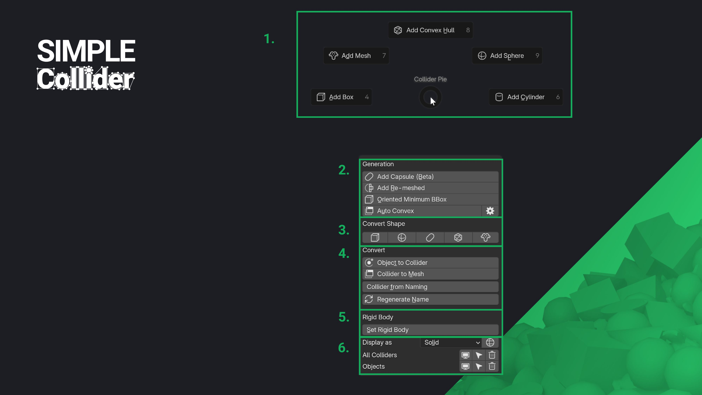
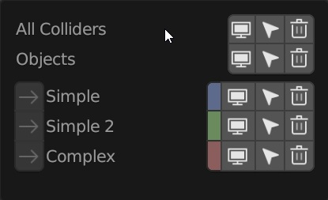

The Side Panel
The Simple Collider addon features a straightforward yet powerful UI. The main elements include the Pie Menu, the Collider Panel (located in the N-Panel), preferences for less frequently used settings, and viewport elements that appear during the creation process.
The Collider Panel in the N-Panel offers the same functionality as the Pie Menu, with additional options.
- Presets: Manage collider naming and grouping presets. Create and modify them in the preferences.
- Shapes: Start creating colliders with options like Box, Convex, Cylindrical Convex, Sphere, and Mesh.
- Advanced Shapes: Use advanced options like 'Oriented Minimum BBox' and Auto Convex for more complex collider creation.
- Convert: Convert shapes or meshes to colliders and vice versa. Automatically regenerate names based on prefab settings.
- Rigid Body: Easily assign rigid body naming and settings to objects.
- Display: Toggle display settings between wireframe and solid.
- Tool Defaults: Set default values for collider generation before running the operation. These values can be adjusted during the creation process.
- Collider Groups: Group, select, show, and hide colliders for better organization.
- Physics Materials: Filter, create, and assign physics materials to your objects.
Popups
Pie Menu (Shift + Ctrl + C)
Access the Pie Menu by pressing Shift + Ctrl + C in the 3D viewport. It’s the quickest way to generate colliders.

- Create colliders (Box, Convex, Cylindrical, Sphere, Mesh).
- Use advanced operations like 'Oriented Minimum BBox' and Auto Convex. Learn more about Auto Convex.
- Change the shape of colliders.
- Convert meshes to colliders and vice versa. All collider-specific properties and naming conventions will be applied.
- Assign rigid body naming and settings to objects.
- Toggle display settings between wireframe and solid.
- Manage visibility and selection of colliders. Group colliders by complexity and adjust visibility or selection for each group or all at once.
Collider Groups (Shift + P)
Open the Collider Groups panel as a popup. Customize hotkeys in the addon preferences.

Physics Materials (Shift + Ctrl + P)
Access the Physics Materials panel as a popup. Customize hotkeys in the addon preferences.

Viewport Overlays
During most operations, a special mode called a "modal operator" is activated in Blender. This mode appears for collider shape tools, Auto Convex, and mesh-to-collider conversions. Different keys and mouse movements allow you to modify collider generation. The options presented vary by operator, and current values, along with the keys to manipulate them, are shown in the viewport overlay.
Preferences
The preferences section allows you to customize various options, including naming conventions, keymaps, UI themes, and Auto Convex collider generation.
- General: Manage settings like linking colliders to a "Collision" collection.
- Presets: Modify naming patterns for colliders and other related settings.
- UI: Customize UI font sizes, colors, and the Simple Collider tab name. You can also adjust collision group colors.
- Keymap: Change hotkeys for popup menus.
- Auto Convex: Configure all settings related to Auto Convex collider generation.